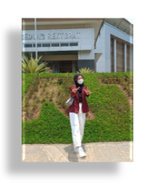

Ayu Yuningsih merupakan mahasiswi semester 2 jurusan Pendidikan Matematika Angkatan 2021, Universitas Sultan Ageng Tirtayasa, di Banten. Lahir pada 19 Desember 2002 di Pandeglang. Bahan ajar ini dibuat oleh Ayu Yuningsih dengan NIM 2225210105 dari kelas 2C. Penulis memiliki nama panggilan Ay, Yuy, Ayu atau terkadang Ayuy. Riwayat Pendidikan SDN Dalembalar 1, SMPN 1 Pandeglang, SMAN 2 Pandeglang, dan sekarang menempuh Pendidikan di Universitas Sultan Ageng Tirtayasa.
Bapak Aan Hendrayana adalah dosen mata kuliah pengembangan multimedia semester 2 jurusan Pendidikan matematika, Universitas Sultan Ageng Tirtayasa, di Banten. Beliau memiliki nama lengkap Dr. Aan Hendrayana, S.Si., M.Pd.